Inverses and Radical Functions
Park rangers and other trail managers may construct rock piles, stacks, or other arrangements, usually called cairns, to mark trails or other landmarks. (Rangers and environmental scientists discourage hikers from doing the same, in order to avoid confusion and preserve the habitats of plants and animals.) A cairn in the form of a mound of gravel is in the shape of a cone with the height equal to twice the radius.
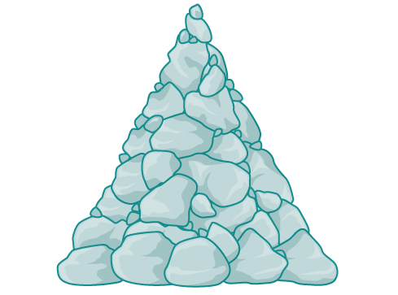
The volume is found using a formula from elementary geometry.
We have written the volume in terms of the radius However, in some cases, we may start out with the volume and want to find the radius. For example: A customer purchases 100 cubic feet of gravel to construct a cone shape mound with a height twice the radius. What are the radius and height of the new cone? To answer this question, we use the formula
This function is the inverse of the formula for in terms of
In this section, we will explore the inverses of polynomial and rational functions and in particular the radical functions we encounter in the process.
Finding the Inverse of a Polynomial Function
Two functions and are inverse functions if for every coordinate pair in there exists a corresponding coordinate pair in the inverse function, In other words, the coordinate pairs of the inverse functions have the input and output interchanged.
For a function to have an inverse, it must be one-to-one.
For example, suppose the Sustainability Club builds a water runoff collector in the shape of a parabolic trough as shown in Figure 2. We can use the information in the figure to find the surface area of the water in the trough as a function of the depth of the water.
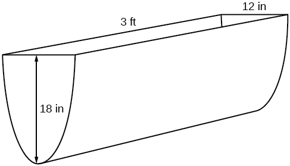
Because it will be helpful to have an equation for the parabolic cross-sectional shape, we will impose a coordinate system at the cross section, with measured horizontally and measured vertically, with the origin at the vertex of the parabola. See Figure 3.
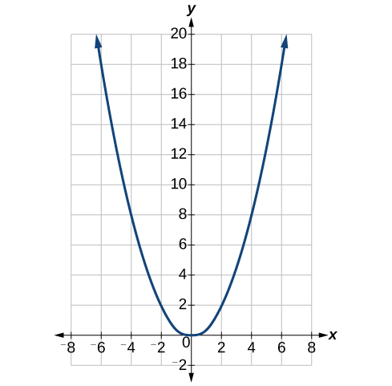
From this we find an equation for the parabolic shape. We placed the origin at the vertex of the parabola, so we know the equation will have form Our equation will need to pass through the point (6, 18), from which we can solve for the stretch factor
Our parabolic cross section has the equation
We are interested in the surface area of the water, so we must determine the width at the top of the water as a function of the water depth. For any depth the width will be given by so we need to solve the equation above for and find the inverse function. However, notice that the original function is not one-to-one, and indeed, given any output there are two inputs that produce the same output, one positive and one negative.
To find an inverse, we can restrict our original function to a limited domain on which it is one-to-one. In this case, it makes sense to restrict ourselves to positive values. On this domain, we can find an inverse by solving for the input variable:
This is not a function as written. Since we are limiting ourselves to positive values in the original function, we can eliminate the negative solution, which gives us the inverse function we’re looking for.
Because is the distance from the center of the parabola to either side, the entire width of the water at the top will be The trough is 3 feet (36 inches) long, so the surface area will then be:
This example illustrates two important points:
- When finding the inverse of a quadratic, we have to limit ourselves to a domain on which the function is one-to-one.
- The inverse of a quadratic function is a square root function. Both are toolkit functions and different types of power functions.
Functions involving roots are often called radical functions. While it is not possible to find an inverse of most polynomial functions, some basic polynomials do have inverses. Such functions are called invertible functions, and we use the notation
Warning: is not the same as the reciprocal of the function This use of “–1” is reserved to denote inverse functions. To denote the reciprocal of a function we would need to write
An important relationship between inverse functions is that they “undo” each other. If is the inverse of a function then is the inverse of the function In other words, whatever the function does to undoes it—and vice-versa. More formally, we write
and
Verifying Inverse Functions
Show that and are inverses, for .
Solution
We must show that and
Therefore, and are inverses.
Finding the Inverse of a Cubic Function
Find the inverse of the function
Solution
This is a transformation of the basic cubic toolkit function, and based on our knowledge of that function, we know it is one-to-one. Solving for the inverse by solving for
Restricting the Domain to Find the Inverse of a Polynomial Function
So far, we have been able to find the inverse functions of cubic functions without having to restrict their domains. However, as we know, not all cubic polynomials are one-to-one. Some functions that are not one-to-one may have their domain restricted so that they are one-to-one, but only over that domain. The function over the restricted domain would then have an inverse function. Since quadratic functions are not one-to-one, we must restrict their domain in order to find their inverses.
Restricting the Domain to Find the Inverse of a Polynomial Function
Find the inverse function of
Solution
The original function is not one-to-one, but the function is restricted to a domain of or on which it is one-to-one. See Figure 5.
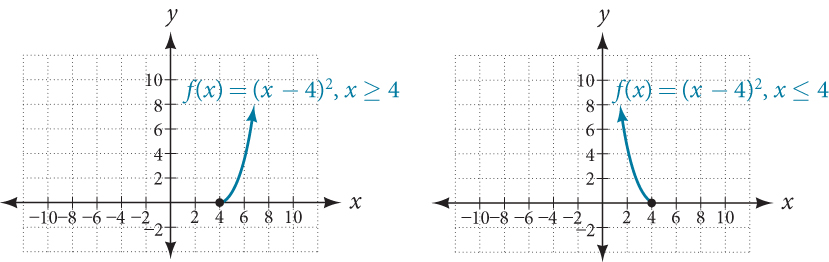
To find the inverse, start by replacing with the simple variable
This is not a function as written. We need to examine the restrictions on the domain of the original function to determine the inverse. Since we reversed the roles of and for the original we looked at the domain: the values could assume. When we reversed the roles of and this gave us the values could assume. For this function, so for the inverse, we should have which is what our inverse function gives.
- ⓐThe domain of the original function was restricted to so the outputs of the inverse need to be the same, and we must use the + case:
- ⓑ The domain of the original function was restricted to so the outputs of the inverse need to be the same, and we must use the – case:
Analysis
On the graphs in Figure 6, we see the original function graphed on the same set of axes as its inverse function. Notice that together the graphs show symmetry about the line The coordinate pair is on the graph of and the coordinate pair is on the graph of For any coordinate pair, if is on the graph of then is on the graph of Finally, observe that the graph of intersects the graph of on the line Points of intersection for the graphs of and will always lie on the line
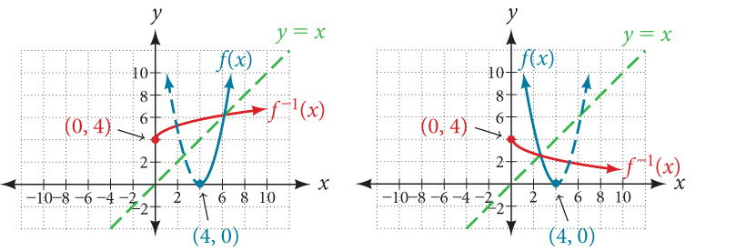
Finding the Inverse of a Quadratic Function When the Restriction Is Not Specified
Restrict the domain and then find the inverse of
Solution
We can see this is a parabola with vertex at that opens upward. Because the graph will be decreasing on one side of the vertex and increasing on the other side, we can restrict this function to a domain on which it will be one-to-one by limiting the domain to
To find the inverse, we will use the vertex form of the quadratic. We start by replacing with a simple variable, then solve for
Now we need to determine which case to use. Because we restricted our original function to a domain of the outputs of the inverse should be the same, telling us to utilize the + case
If the quadratic had not been given in vertex form, rewriting it into vertex form would be the first step. This way we may easily observe the coordinates of the vertex to help us restrict the domain.
Analysis
Notice that we arbitrarily decided to restrict the domain on We could just have easily opted to restrict the domain on in which case Observe the original function graphed on the same set of axes as its inverse function in Figure 7. Notice that both graphs show symmetry about the line The coordinate pair is on the graph of and the coordinate pair is on the graph of Observe from the graph of both functions on the same set of axes that
and
Finally, observe that the graph of intersects the graph of along the line
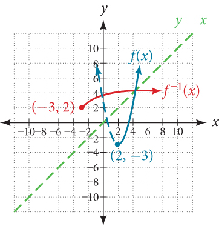
Solving Applications of Radical Functions
Notice that the functions from previous examples were all polynomials, and their inverses were radical functions. If we want to find the inverse of a radical function, we will need to restrict the domain of the answer because the range of the original function is limited.
Finding the Inverse of a Radical Function
Restrict the domain and then find the inverse of the function
Solution
Note that the original function has range Replace with then solve for
Recall that the domain of this function must be limited to the range of the original function.
Analysis
Notice in Figure 8 that the inverse is a reflection of the original function over the line Because the original function has only positive outputs, the inverse function has only positive inputs.
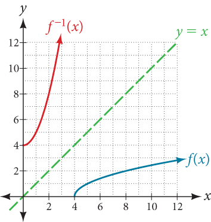
Radical functions are common in physical models, as we saw in the section opener. We now have enough tools to be able to solve the problem posed at the start of the section.
Solving an Application with a Cubic Function
Park rangers construct a mound of gravel in the shape of a cone with the height equal to twice the radius. The volume of the cone in terms of the radius is given by
Find the inverse of the function that determines the volume of a cone and is a function of the radius Then use the inverse function to calculate the radius of such a mound of gravel measuring 100 cubic feet. Use
Solution
Start with the given function for Notice that the meaningful domain for the function is since negative radii would not make sense in this context. Also note the range of the function (hence, the domain of the inverse function) is Solve for in terms of using the method outlined previously.
This is the result stated in the section opener. Now evaluate this for and
Therefore, the radius is about 3.63 ft.
Determining the Domain of a Radical Function Composed with Other Functions
When radical functions are composed with other functions, determining domain can become more complicated.
Finding the Domain of a Radical Function Composed with a Rational Function
Find the domain of the function
Solution
Because a square root is only defined when the quantity under the radical is non-negative, we need to determine where The output of a rational function can change signs (change from positive to negative or vice versa) at x-intercepts and at vertical asymptotes. For this equation, the graph could change signs at = –2, 1, and 3.
To determine the intervals on which the rational expression is positive, we could test some values in the expression or sketch a graph. While both approaches work equally well, for this example we will use a graph as shown in Figure 9.
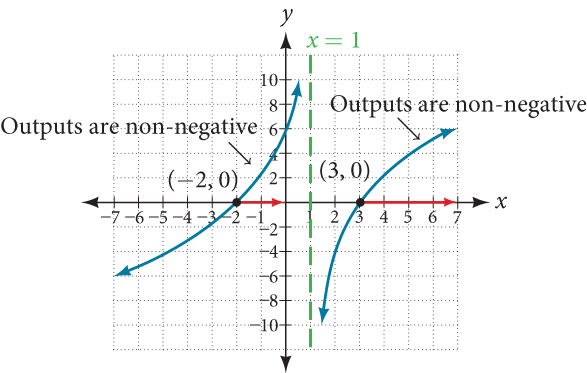
This function has two x-intercepts, both of which exhibit linear behavior near the x-intercepts. There is one vertical asymptote, corresponding to a linear factor; this behavior is similar to the basic reciprocal toolkit function, and there is no horizontal asymptote because the degree of the numerator is larger than the degree of the denominator. There is a y-intercept at
From the y-intercept and x-intercept at we can sketch the left side of the graph. From the behavior at the asymptote, we can sketch the right side of the graph.
From the graph, we can now tell on which intervals the outputs will be non-negative, so that we can be sure that the original function will be defined. has domain or in interval notation,
Finding Inverses of Rational Functions
As with finding inverses of quadratic functions, it is sometimes desirable to find the inverse of a rational function, particularly of rational functions that are the ratio of linear functions, such as in concentration applications.
Finding the Inverse of a Rational Function
The function represents the concentration of an acid solution after mL of 40% solution has been added to 100 mL of a 20% solution. First, find the inverse of the function; that is, find an expression for in terms of Then use your result to determine how much of the 40% solution should be added so that the final mixture is a 35% solution.
Solution
We first want the inverse of the function. We will solve for in terms of
Now evaluate this function for
We can conclude that 300 mL of the 40% solution should be added.
Key Concepts
- The inverse of a quadratic function is a square root function.
- If is the inverse of a function then is the inverse of the function See Example 1.
- While it is not possible to find an inverse of most polynomial functions, some basic polynomials are invertible. See Example 2.
- To find the inverse of certain functions, we must restrict the function to a domain on which it will be one-to-one. See Example 3 and Example 4.
- When finding the inverse of a radical function, we need a restriction on the domain of the answer. See Example 5 and Example 7.
- Inverse and radical and functions can be used to solve application problems. See Example 6 and Example 8.
Section Exercises
Verbal
Explain why we cannot find inverse functions for all polynomial functions.
Solution
It can be too difficult or impossible to solve for in terms of
Why must we restrict the domain of a quadratic function when finding its inverse?
When finding the inverse of a radical function, what restriction will we need to make?
Solution
We will need a restriction on the domain of the answer.
The inverse of a quadratic function will always take what form?
Algebraic
For the following exercises, find the inverse of the function on the given domain.
Solution
Solution
Solution
Solution
For the following exercises, find the inverse of the functions.
Solution
Solution
For the following exercises, find the inverse of the functions.
Solution
Solution
Solution
Solution
Solution
Solution
Solution
Solution
Graphical
For the following exercises, find the inverse of the function and graph both the function and its inverse.
Solution
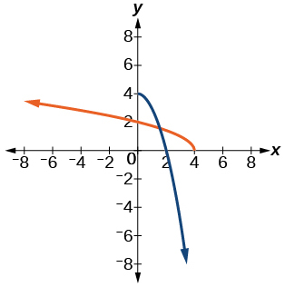
Solution
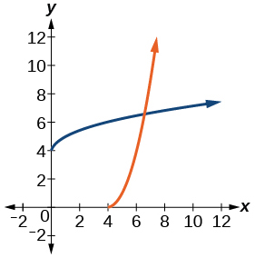
Solution
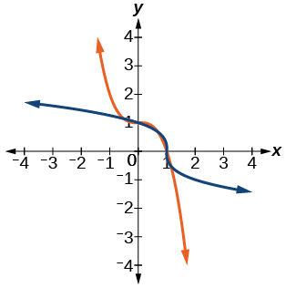
Solution
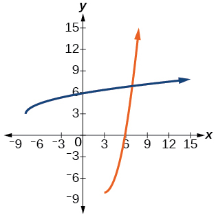
Solution
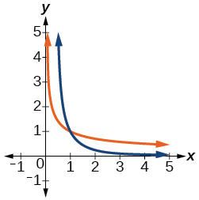
For the following exercises, use a graph to help determine the domain of the functions.
Solution
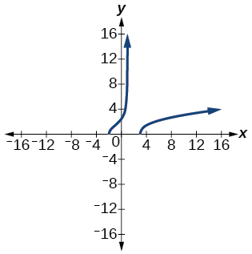
Solution
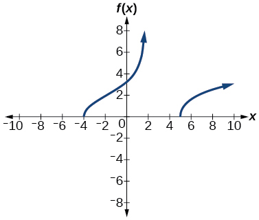
Technology
For the following exercises, use a calculator to graph the function. Then, using the graph, give three points on the graph of the inverse with y-coordinates given.
Solution
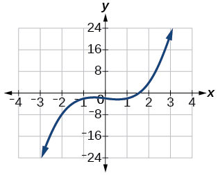
Solution
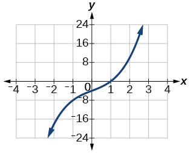
Solution
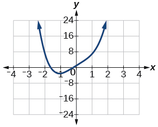
Extensions
For the following exercises, find the inverse of the functions with positive real numbers.
Solution
Solution
Real-World Applications
For the following exercises, determine the function described and then use it to answer the question.
An object dropped from a height of 200 meters has a height, in meters after seconds have lapsed, such that Express as a function of height, and find the time to reach a height of 50 meters.
Solution
5.53 seconds
An object dropped from a height of 600 feet has a height, in feet after seconds have elapsed, such that Express as a function of height and find the time to reach a height of 400 feet.
The volume, of a sphere in terms of its radius, is given by Express as a function of and find the radius of a sphere with volume of 200 cubic feet.
Solution
3.63 feet
The surface area, of a sphere in terms of its radius, is given by Express as a function of and find the radius of a sphere with a surface area of 1000 square inches.
A container holds 100 ml of a solution that is 25 ml acid. If ml of a solution that is 60% acid is added, the function gives the concentration, as a function of the number of ml added, Express as a function of and determine the number of mL that need to be added to have a solution that is 50% acid.
Solution
250 mL
The period in seconds, of a simple pendulum as a function of its length in feet, is given by . Express as a function of and determine the length of a pendulum with period of 2 seconds.
The volume of a cylinder , in terms of radius, and height, is given by If a cylinder has a height of 6 meters, express the radius as a function of and find the radius of a cylinder with volume of 300 cubic meters.
Solution
3.99 meters
The surface area, of a cylinder in terms of its radius, and height, is given by If the height of the cylinder is 4 feet, express the radius as a function of and find the radius if the surface area is 200 square feet.
The volume of a right circular cone, in terms of its radius, and its height, is given by Express in terms of if the height of the cone is 12 inches and find the radius of a cone with volume of 50 cubic inches.
Solution
1.99 inches
Consider a cone with height of 30 feet. Express the radius, in terms of the volume, and find the radius of a cone with volume of 1000 cubic feet.
Analysis
Look at the graph of and Notice that the two graphs are symmetrical about the line This is always the case when graphing a function and its inverse function.
Also, since the method involved interchanging and notice corresponding points. If is on the graph of then is on the graph of Since is on the graph of then is on the graph of Similarly, since is on the graph of then is on the graph of See Figure 4.
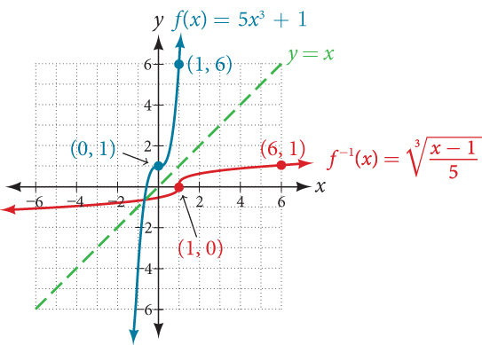